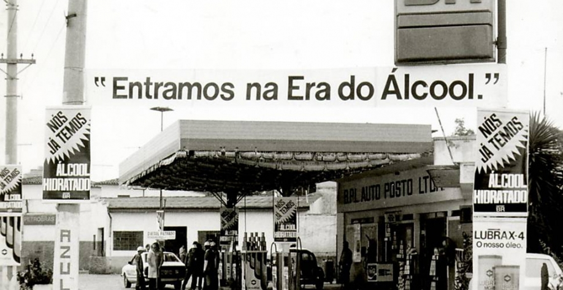

A Crise do Petróleo começou com o preço do petróleo ter ficado quatro vezes mais caro, devido aos países árabes terem diminuído a produção e aumentando o preço do petróleo.
Devido à crise, o Brasil enfrentou uma alta na inflação e nas dívidas externas, fazendo a economia desacelerar. Então Geisel, mesmo com a crise, ainda criou o programa Proálcool, que foi criado para reduzir a dependência do petróleo, coisa que o Brasil dependia muito na época. O governo Geisel incentivou o uso do álcool, combustível feito de cana-de-açúcar. Além disso, Geisel também investiu na Petrobrás, Eletrobrás, Petroquímica, Siderurgia e etc. Com isso, o Brasil deixou de depender do Oriente Médio para comprar petróleo de outros países.
